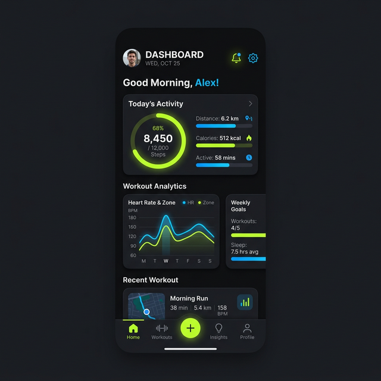

Gym Workout Tracker
The ultimate companion for your fitness journey.
Overview
A mobile-first web application designed to help athletes track their workouts with precision. It features a clean UI, custom routine builder, and progress visualization tools.
Key Features
- Custom Routine Creation
- Progress Visualization (Charts)
- Exercise Library
- Offline Support
Tech Stack
React
Firebase
Chart.js
PWA
